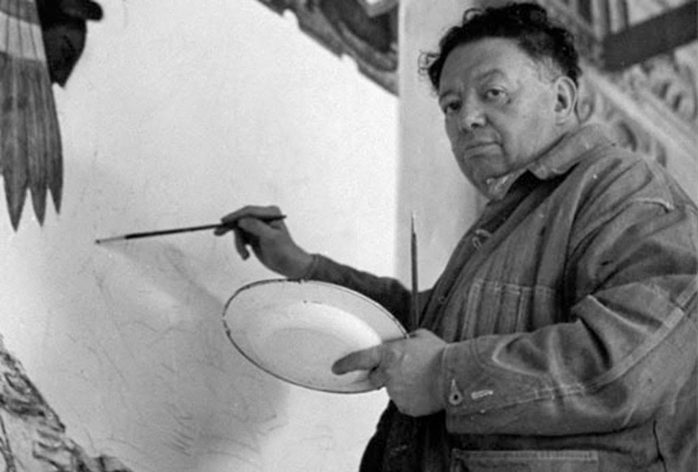

No obstante, es recordado simplemente como Diego Rivera. Nació el 8 de diciembre de 1886 en la ciudad de Guanajuato. Seis años después de que Diego viera la luz, su familia se trasladó a la Ciudad de México.
Su nombre completo era Diego María de la Concepción Juan Nepomuceno Estanislao de la Rivera y Barrientos Acosta y Rodríguez.
| Cabe destacar que Rivera fue un gran entusiasta de la Revolución Rusa por lo que, en 1927, se fue a Rusia con el fin de asistir a la celebración de los 10 años de la famosa Revolución de Octubre. Sin embargo, antes de irse se separó de Guadalupe quien, al poco tiempo, se convirtió en esposa de Jorge Cuesta, químico y poeta perteneciente a la generación de Los Contemporáneos, hecho que acentuó las rivalidades entre Rivera y aquel grupo. |

Biografia de Diego Rivera
En el siguiente cuadro podrás leer un poco sobre su fallecimiento